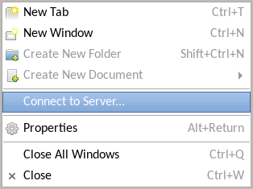
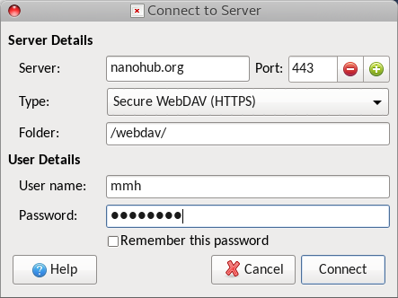
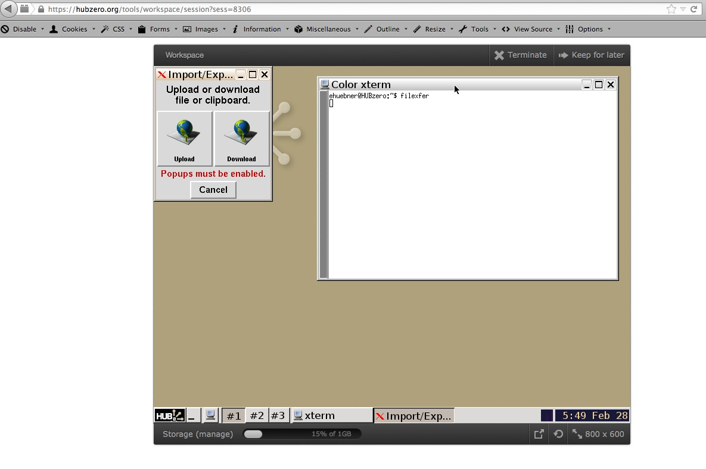

Tools
Accessing your home directory
Your hub home directory holds the files your tool sessions read and write. This section covers the ways to reach it from your own computer, and what the hub itself offers for managing what is in it.
Where the files are
In a tool session your home directory is $HOME, which takes the form
/home/<hubname>/<username>. Session and results directories are created
underneath it; see Tool paths.
The web server reaches the same files through a separate mount. Both
com_tools
and the Members - Account plugin
build their paths from /webdav/home/<username>. com_tools will take a
different base from its undeclared storagepath parameter; the account plugin
will not.
Ways in
| Method | Use it for |
|---|---|
| sFTP | Everyday transfers from a desktop client or the command line. The most common choice. |
| WebDAV | Mounting your hub storage as a drive or network location. |
| filexfer | Moving a file in or out while a tool session is running. |
If you develop with Jupyter, its own upload and download controls reach the same home directory. See Jupyter Notebooks.
Managing what is there
The hub's storage manager is part of the CMS. Signed in, open /tools/storage.
It shows how much of your quota you have used, lists the files under your home
directory, and lets you delete files and folders. A Purge control for old
session data appears only when the hub has set the Storage Host option on
com_tools; without it the control redirects instead of doing anything.
The My Sessions module carries the same figure with a Manage link back to the storage manager. The meter is drawn only when the Show Storage option is on.
sFTP
sFTP transfers files over SSH. It encrypts commands and data, so passwords and file contents never cross the network in the clear. It is not FTP: an FTP client cannot talk to an sFTP server, and an sFTP client cannot talk to an FTP server.
Before you connect
Two things on the hub decide whether you can authenticate.
Your local services password. If you signed in through an external provider
— an institutional login, a social account — you have no password the SSH server
can check. Open your profile's Account tab and use Request token to set
a local password for SSH, sFTP and tool development access. Verified against
core/plugins/members/account/account.php.
Your SSH public key. The same Account tab shows a Local services
account section with your local services username and a Manage Public SSH
keys box. Paste your public key there and submit; the hub writes it to
.ssh/authorized_keys in your home directory. The section only appears when the
hub has turned on the plugin's Show local services details option, so if you
do not see it, ask an administrator. Verified against
core/plugins/members/account/account.php.
Graphical clients
A graphical client lets you drag files between windows. Give it the host name of
your hub — yourhub.org — and your hub username, then your password or your key.
Linux. Most file managers speak sFTP directly. In GNOME Files, KDE Dolphin
or Nemo, open the location bar (Ctrl+L in GNOME) and enter
sftp://username@yourhub.org. Your files then behave like local ones.
Windows. WinSCP,
FileZilla, and
PuTTY, whose psftp
command is its sFTP client.
macOS. Transmit, Fetch, Cyberduck, and ForkLift.
Command line
sftp ships with OpenSSH and is available on Linux and in the macOS terminal.
sftp username@yourhub.org
Once connected you get an sftp> prompt.
| Command | Description |
|---|---|
cd |
Change the directory on the remote computer |
chmod |
Change the permissions of files on the remote computer |
chown |
Change the owner of files on the remote computer |
dir (or ls) |
List the files in the current directory on the remote computer |
exit (or quit) |
Close the connection and leave sFTP |
get |
Copy a file from the remote computer to the local computer |
help (or ?) |
Get help on the use of sFTP commands |
lcd |
Change the directory on the local computer |
lls |
List the files in the current directory on the local computer |
lmkdir |
Create a directory on the local computer |
ln (or symlink) |
Create a symbolic link for a file on the remote computer |
lpwd |
Show the current directory on the local computer |
lumask |
Change the local umask value |
mkdir |
Create a directory on the remote computer |
put |
Copy a file from the local computer to the remote computer |
pwd |
Show the current directory on the remote computer |
rename |
Rename a file on the remote host |
rm |
Delete files from the remote computer |
rmdir |
Remove a directory on the remote host, which usually has to be empty |
version |
Display the sFTP protocol version |
! |
Drop to a local shell. Follow it with a command, as in !pwd, to run just that command. |
WebDAV
WebDAV is the Distributed Authoring and Versioning extension to HTTP. It lets a client browse a remote filesystem, usually in a graphical browser that makes your hub files look like files on your desktop. Hubs offer WebDAV over HTTPS only; plain HTTP is not supported.
The address
On a standard installation the endpoint is:
https://yourhub.org/webdav/
Some hubs put it on a host of its own, https://webdav.yourhub.org/. If neither
works, ask your hub administrator which one it uses. You authenticate with your
hub login and password.
Linux
Most desktop file managers speak WebDAV. In the location bar of GNOME Files, KDE Dolphin or Nemo, enter:
davs://username@yourhub.org/webdav
Some file managers offer a Connect to Server entry instead. Choose Secure
WebDAV (HTTPS) and give /webdav as the folder.


To mount your hub storage as a filesystem rather than browse it, use
davfs2. For a text-mode client,
cadaver behaves much like FTP; run it against the address above and it prompts
for your login.
macOS
- In the Finder, choose Go → Connect to Server.
- Enter the address for your hub and select Connect.
- Enter your hub login and password when prompted.
The hub then appears in the Finder and you can drag files and folders to and from it.
Windows
Windows connects through the WebClient service, which is not always running. Turn it on first:
- Open Services.
- Find WebClient, set its startup type to Automatic, and select Apply.
- If it is not running, select Start.
Then map the hub as a network location:
- Open File Explorer and select This PC.
- Select Map network drive → Connect to a Web site that you can use to store your documents and pictures.
- Select Next, then Choose another network location, then Next.
- Enter the address for your hub and select Next.
- Enter your hub credentials.
- Name the location and finish the wizard.
The new network location appears under This PC. Open it and drag files and folders between it and your computer.
filexfer
filexfer moves a file between your computer and a running tool session,
without going through sFTP or WebDAV first.
Using it
Start the Workspace tool and type filexfer at the terminal prompt. The
interface offers Upload and Download. Choosing either opens a browser
window for the transfer, so your browser must allow pop-ups from the hub.

Other tools can include filexfer as a secondary application, which gives their
users the same way of exchanging files with a session.
From inside a tool
A tool does not call filexfer itself. It calls the two commands that ship with
it, importfile and exportfile. See
Importing and exporting user files.
Reviewed against 2.4-main @ e097e0236d on 2026-09-10.